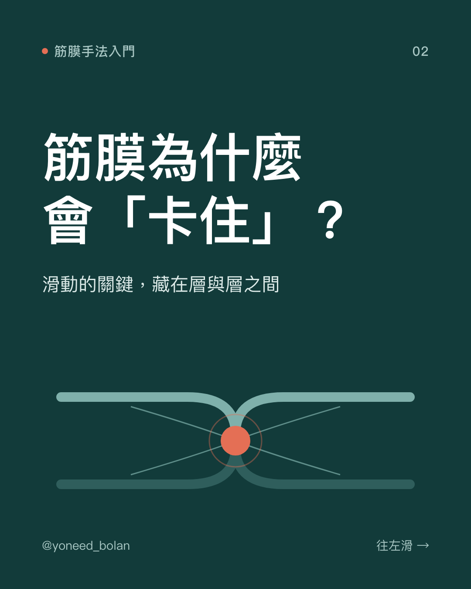
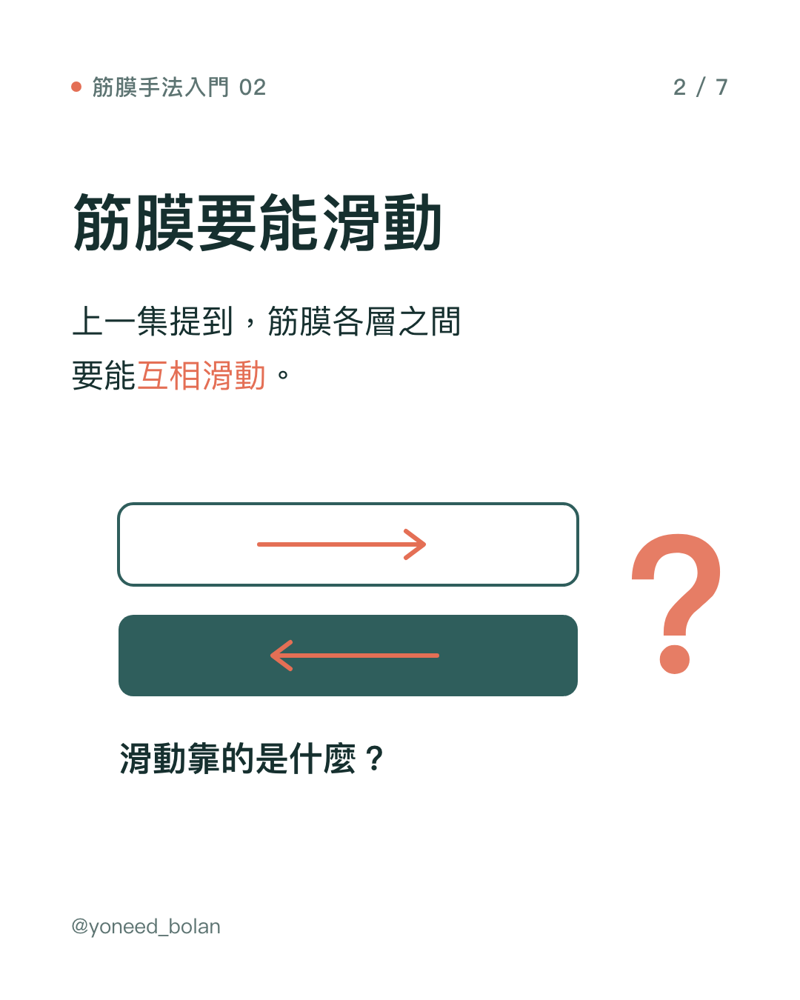
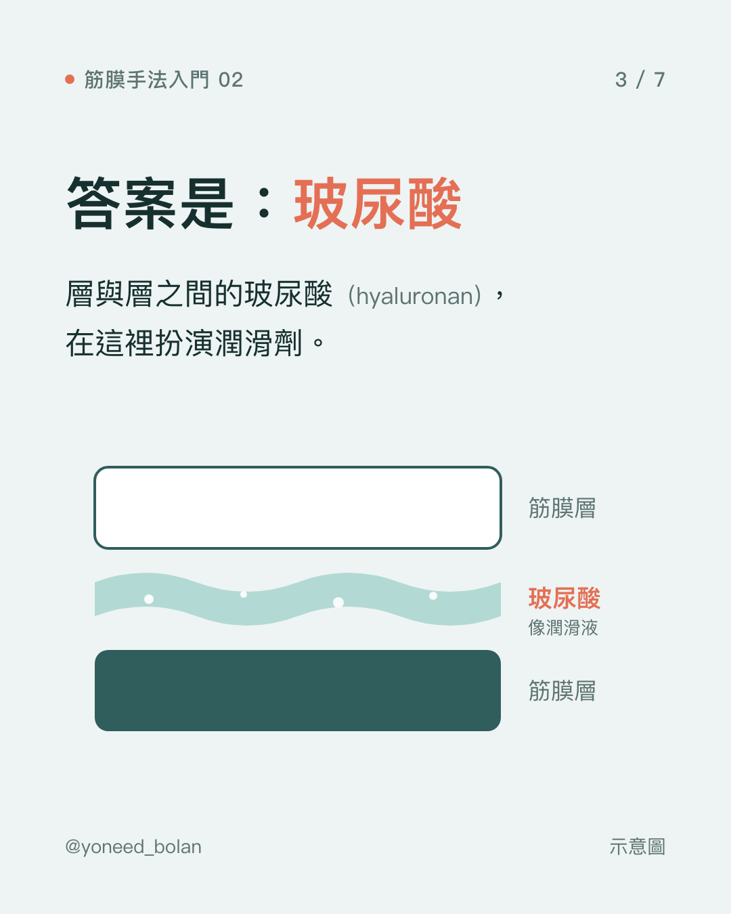
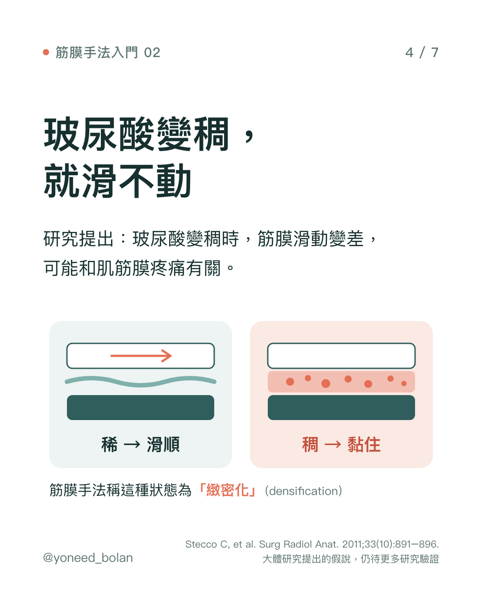
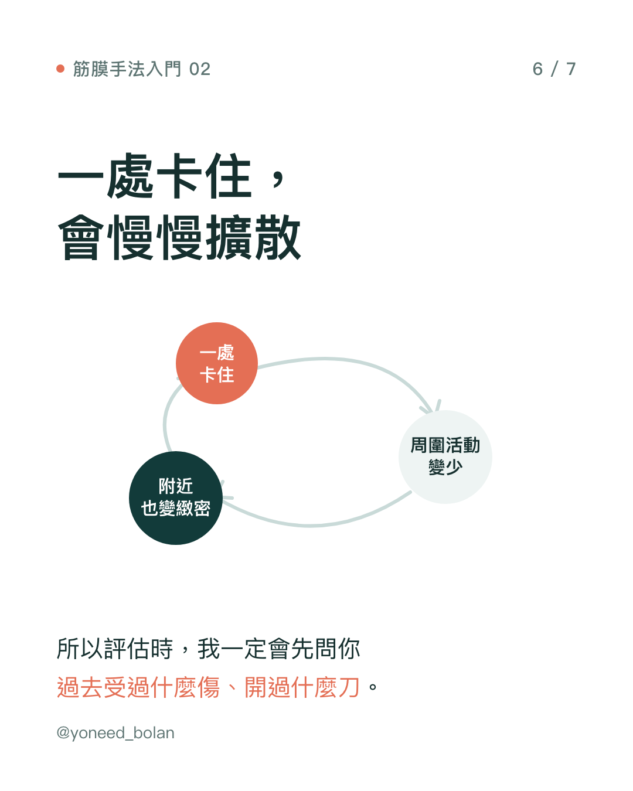

衛教文章・筋膜手法入門 02
筋膜為什麼會「卡住」？玻尿酸、緻密化與舊傷
- 筋膜各層之間靠玻尿酸（hyaluronan）潤滑，才能互相滑動。
- 研究者提出：玻尿酸變稠時，筋膜層滑動變差，可能和肌筋膜疼痛有關。筋膜手法稱這種狀態為「緻密化」（densification）。
- 依筋膜手法的觀點，久坐、重複動作、舊傷與手術疤痕，都可能讓筋膜變緻密。
- 這些目前多屬研究假說與臨床模型，支持的研究仍在累積。





上一篇提到，筋膜分成好幾層，層與層之間要能互相滑動。這篇接著談：滑動靠的是什麼？為什麼有時候會滑不動？
滑動靠的是玻尿酸
玻尿酸是結締組織細胞外基質（extracellular matrix）裡含量最多的多醣類。很多人知道它被用在保養品和關節注射，但在筋膜裡，它扮演的是潤滑劑的角色。
研究在深筋膜（deep fascia）各層之間，以及深筋膜和肌肉之間，都觀察到玻尿酸（Stecco et al., 2011）。一篇 2021 年的回顧整理了玻尿酸在筋膜中的角色，並指出它的功能和分子大小密切相關：分子長短不同，在組織裡的作用也不同（Pratt, 2021）。
可以想像兩片玻璃中間夾著一層水：水夠稀，兩片玻璃很容易互相滑動；水變得像糖漿一樣黏，就推不太動了。
什麼是「緻密化」？
Stecco 團隊提出一個假說：當筋膜層間的玻尿酸變得比較黏稠，層與層之間的滑動就會變差，周圍的組織和神經末梢承受的拉扯也跟著改變，這可能和肌筋膜疼痛有關（Stecco et al., 2011）。
筋膜手法（Fascial Manipulation）把這種狀態稱為「緻密化」。它不是組織變成疤痕，而是指筋膜層之間的基質變得比較黏、滑動比較差。臨床上觸診時，治療師常會摸到比較硬、像條索或沙粒的手感。
有一篇超音波研究比較了慢性頸痛患者和健康受試者，發現患者胸鎖乳突肌與斜角肌的筋膜比較厚，而增厚的主要是疏鬆結締組織的部分（Stecco et al., 2014）。這個結果和緻密化的假說方向一致，但這篇研究的樣本只有幾十人，研究設計的品質也屬中等，還需要更多研究確認。
哪些情況可能讓筋膜變緻密？
依筋膜手法的臨床模型，常見的有三類：
- 長時間不動：例如久坐、長時間維持同一個姿勢。組織缺少活動，層與層之間的滑動也跟著變少。
- 過度使用：例如一直重複同一個動作，工作或運動中的反覆負荷。
- 外傷或手術：扭傷、骨折、手術留下的疤痕。疤痕組織癒合時，新生的膠原纖維排列比正常組織雜亂，可能讓原本分開的筋膜層黏在一起，影響附近的滑動。
要說明的是，這是筋膜手法用來解釋臨床現象的模型。每一類情況和緻密化之間的因果關係，目前還沒有被研究完整證實。
一處卡住，為什麼會影響周圍？
一個地方滑動變差，身體往往會用周圍的部位多出力來完成動作。結果卡住的地方活動更少，周圍的組織負荷又變大，附近也更容易出現問題。這是臨床上常見的惡性循環。
這也是為什麼做筋膜手法評估時，我一定會先問：以前受過什麼傷、開過什麼刀、有沒有出過車禍。很多人覺得幾年前的腳踝扭傷「早就好了」，但它可能是現在膝蓋或下背不舒服的線索之一。下一篇會說明，筋膜手法怎麼從痛的地方，回推到可能的源頭。
重點整理
- 筋膜層間的玻尿酸讓組織能互相滑動。
- 玻尿酸變稠可能讓滑動變差，筋膜手法稱為緻密化，目前屬於有初步支持的假說。
- 久坐、重複動作、舊傷與手術疤痕，依臨床模型都可能和緻密化有關。
- 評估時，過去的受傷史是找問題來源的重要線索。
參考文獻
- Stecco C, Stern R, Porzionato A, et al. Hyaluronan within fascia in the etiology of myofascial pain. Surg Radiol Anat. 2011;33(10):891–896. doi:10.1007/s00276-011-0876-9.
- Pratt RL. Hyaluronan and the Fascial Frontier. Int J Mol Sci. 2021;22(13):6845. doi:10.3390/ijms22136845.
- Stecco A, Meneghini A, Stern R, Stecco C, Imamura M. Ultrasonography in myofascial neck pain: randomized clinical trial for diagnosis and follow-up. Surg Radiol Anat. 2014;36(3):243–253. doi:10.1007/s00276-013-1185-2.